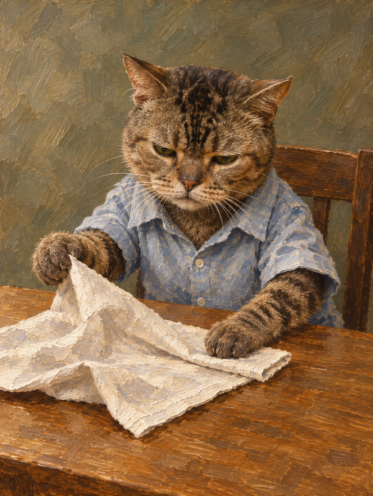

虎斑猫 · 把餐巾理平
人物设计
The stern-faced tabby carefully flattens an ordinary crumpled napkin with its small paws.
Choose the pale blue short-sleeve shirt: a small collar frames the compact head, sleeves follow the two different paw reaches and a loose lower body preserves the tabby belly.
参考职责
Image 1：用户原照片，identity；照片未公开。
Image 2：拉菲认可图，quality；不复制其猫脸、报纸、长椅或配色。
输入 hash 与实际请求原件 hash 见 case.json；公开请求已脱敏。
实际 Prompt
Image 1 role: identity. Image 2 role: quality. Broad tabby cheeks, compact muzzle and pinkish nose; narrowed attentive eyes and upright cat ears as in Image 1, without making a gray British-shorthair face. The stern-faced tabby carefully flattens an ordinary crumpled napkin with its small paws. Seated slightly forward at a small dining table, one paw holds a rumpled linen napkin while the other smooths its folded edge. Seated slightly forward at a small dining table, one paw holds a rumpled linen napkin while the other smooths its folded edge. Keep the specified paw tasks, contacts and small animal paws readable; no human hands or additional limbs. Design head, shoulders, clothing, body and paws together around this activity; keep credible seated support. Eyes look down toward the napkin edge, with a restrained mouth, not a forced grin. Choose the pale blue short-sleeve shirt: a small collar frames the compact head, sleeves follow the two different paw reaches and a loose lower body preserves the tabby belly. Preserve the individual identity from Image 1. Translate coat into directional paint and connected light-dark volume, rather than a generic toy or an all-over photographic fur surface. The stern-faced tabby carefully flattens an ordinary crumpled napkin with its small paws. Individual identity: brown and charcoal striped tabby cat, broad short-muzzled face, narrow greenish eyes and small pinkish nose, compact sturdy body with clear leg stripes. Clothing decision: Choose the pale blue short-sleeve shirt: a small collar frames the compact head, sleeves follow the two different paw reaches and a loose lower body preserves the tabby belly. One portrait-format finished oil painting of the specific animal from Image 1 in this new ordinary-life scene. Image 2 is ONLY the user-approved painting-quality reference: borrow connected volumes, purposeful marks, edges and character coherence, not its gray cat, surf shirt, logo, newspaper, bench or palette. Keep head, muzzle, eyes and ears individual, with paint turns and restrained asymmetry. Fur, cloth and object marks should explain their different volumes. Clothing follows the specified activity and body shape. Show the head, torso and all paws that perform the action; use natural framing for other limbs. Hands remain animal paws; object contacts and seated support stay credible. No extra fingers, limbs, caption, lettering, logos or physical frame. Simple dusty olive-gray dining room field, subdued wood tabletop, no photograph human, packet or pavement. Keep background contrast subordinate to the face and relevant contacts; texture can vary without uniformly treating every surface. Paint a specific animal character whose individual identity, posture, clothing and ordinary activity belong together. Build connected forehead, eye, cheek and muzzle volumes and a coherent body, garment and used-object silhouette. Let light-dark turns, directional marks, contact shadows and varied edges explain volume and material. Fur, whiskers, weave and substantial paint marks may remain where they support form and expression; neither uniform photographic finishing nor uniform decorative texture should replace painting decisions. Organize attention through relative contrast, colour relationships and edge emphasis; a textured background can still sit behind the figure. Choose a new palette, clothing and scene appropriate to this subject. Do not copy the approved reference's gray cat, surf shirt, logo, newspaper, bench or warm wall as a template. Honor explicit gaze, clothing and scene requirements. Preserve credible animal connections, contacts and support; no unrequested human fingers, branding, captions, signature or frame.
实际调用与成图
冻结：2026-11-01T03:27:52.234487+00:00
开始：2026-11-01T03:31:29.539611+00:00
完成：2026-11-01T03:32:00.722915+00:00
版本 1.29.0 · 调用一次 · 无重试

评审与认可
初评：pass；用户回复：“两张都认可”。
剩余问题：毛面、衣物与餐巾仍有丰富细纹，后续应观察是否争夺注意力；画外后腿不作通过宣称。
艺术判断、用户认可和技术检查独立。完整记录：案例说明。